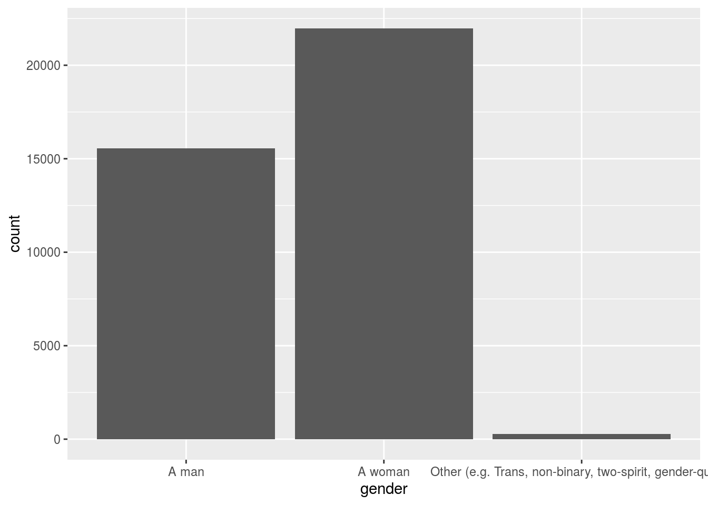
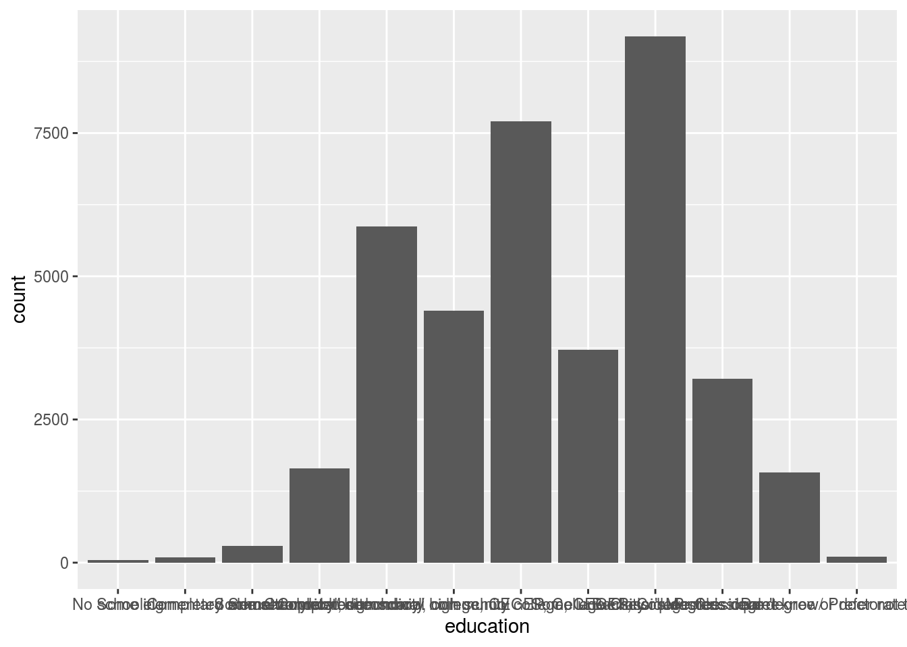

Abstract
Introduction
Data
decon%>%
ggplot(aes(x=gender))+
geom_bar()
From the above output, we see that there are more women than men in this online survey dataset.
decon%>%
ggplot(aes(x=education))+
geom_bar()
sort(table(decon$education))
##
## No schooling
## 48
## Some elementary school
## 87
## Don't know/ Prefer not to answer
## 99
## Completed elementary school
## 288
## Professional degree or doctorate
## 1575
## Some secondary/ high school
## 1649
## Master's degree
## 3207
## Some university
## 3716
## Some technical, community college, CEGEP, College Classique
## 4394
## Completed secondary/ high school
## 5865
## Completed technical, community college, CEGEP, College Classique
## 7702
## Bachelor's degree
## 9192From the above output, we see that in this dataset, people with Bachelor’s degree takes the most proportion and then college.
Discussion
data and graph discussion
From the above data and graph, we see that there are more women than men in this online survey dataset and that people with Bachelor’s degree or college degree take a large proportion in this dataset. It tells us that women become more and more concerned about the election and people with high degree of education also care more about the election.
weakness and next steps
Since this is an online survey dataset